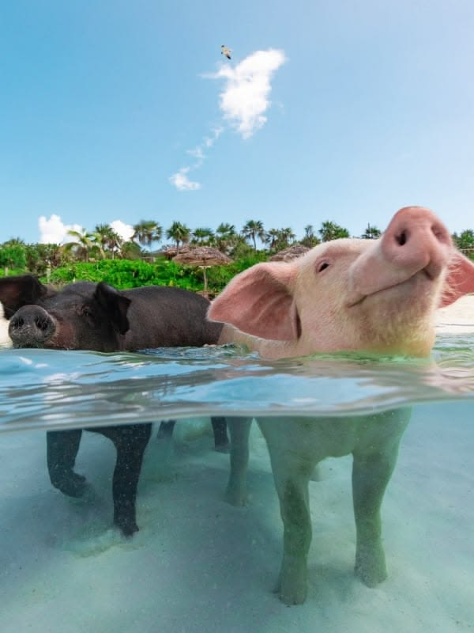
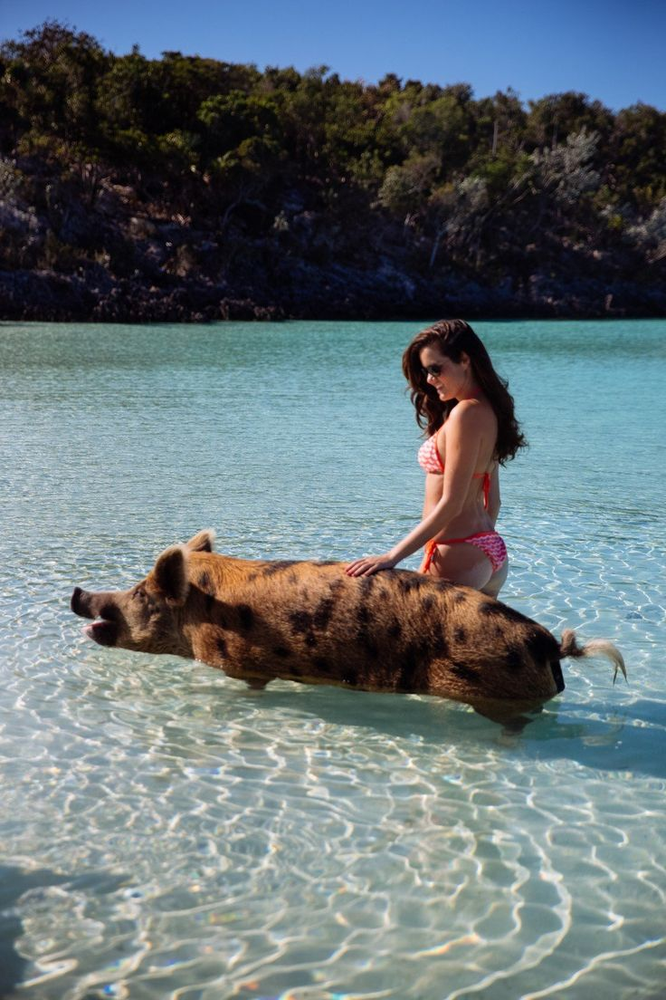
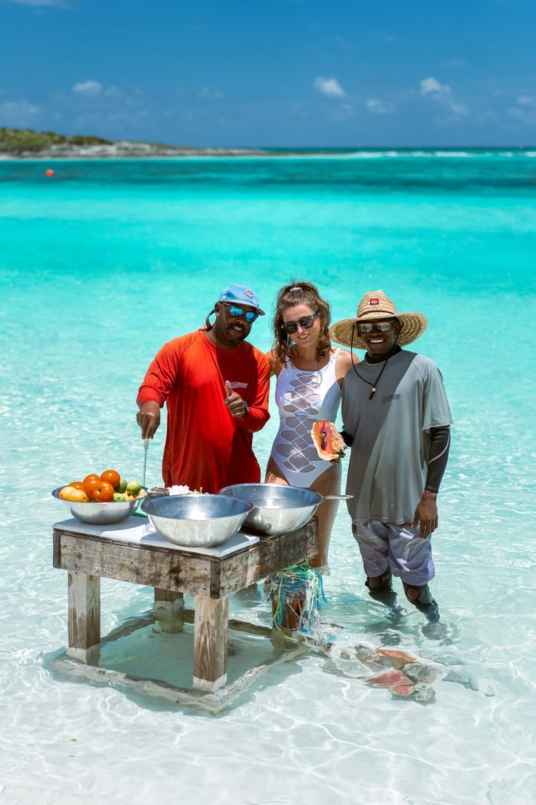
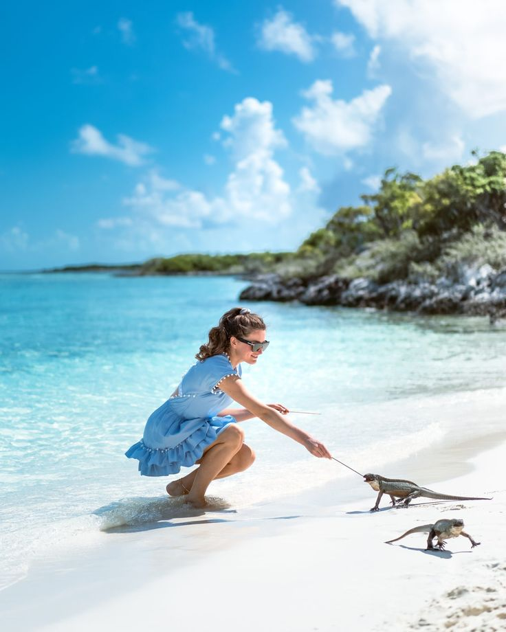

Big Major Cay
Discover the beautiful island and its famous shoreline surrounded by clear Exuma water.
Exuma Sport Coast Service is the accommodation service featured on this platform, helping visitors discover comfortable places to stay while exploring the beautiful islands and communities of Exuma, Bahamas. Our accommodation selection covers areas including George Town, Moss Town, Staniel Cay, Michelson/Roker's Point and other destinations throughout Exuma.
Whether you are visiting for a relaxing beach holiday, an island adventure, water activities or a longer stay, Exuma Sport Coast Service provides accommodation options designed to make your Exuma experience convenient and enjoyable. Browse available properties, view their living rooms, bedrooms and bathrooms, and choose the accommodation that best suits your trip.
Home of the World-Famous Swimming Pigs
Big Major Cay is one of the most recognizable destinations in the Exuma Cays. The island is best known for its famous swimming pigs, which have become one of the most memorable attractions for visitors exploring the turquoise waters of Exuma.
Visitors normally arrive by boat and can spend time around the shoreline, enjoy the clear water, take photographs and observe the pigs as they move along the beach and into the shallow sea.
The surrounding waters are also ideal for enjoying the natural beauty of the Exuma Cays. A visit to Big Major Cay is commonly combined with other nearby attractions such as Staniel Cay, sandbars and other beautiful islands.

Discover the beautiful island and its famous shoreline surrounded by clear Exuma water.

See the famous pigs that have made Big Major Cay one of Exuma's most popular attractions.

Enjoy the white sandy shoreline and shallow turquoise water surrounding the island.

Experience the brilliant turquoise water and peaceful island scenery around Big Major Cay.
Exuma Sport Coast Service · Exuma, Bahamas, opposite the airport · exumaaccomodations@gmail.com
© 2026 Exuma Sport Coast Service · All rights reserved.